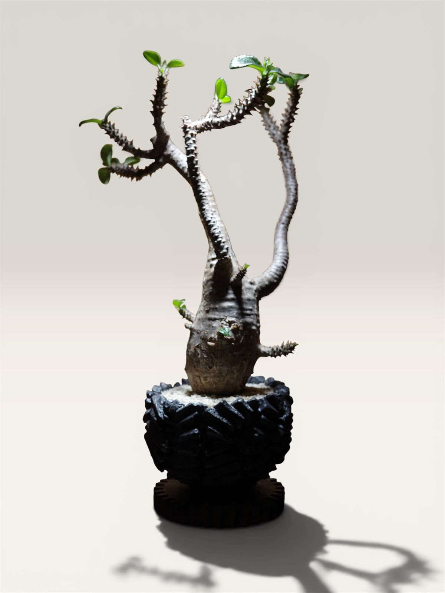
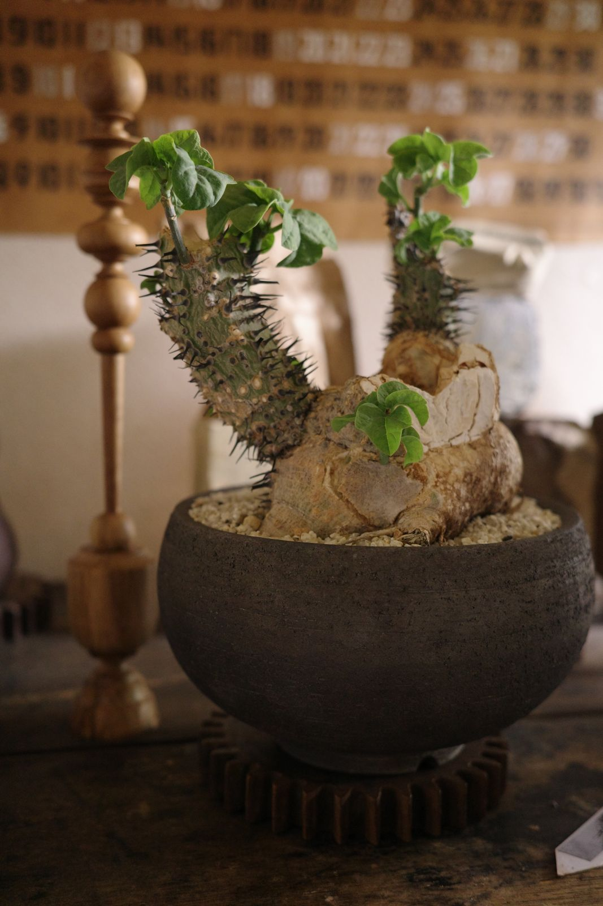
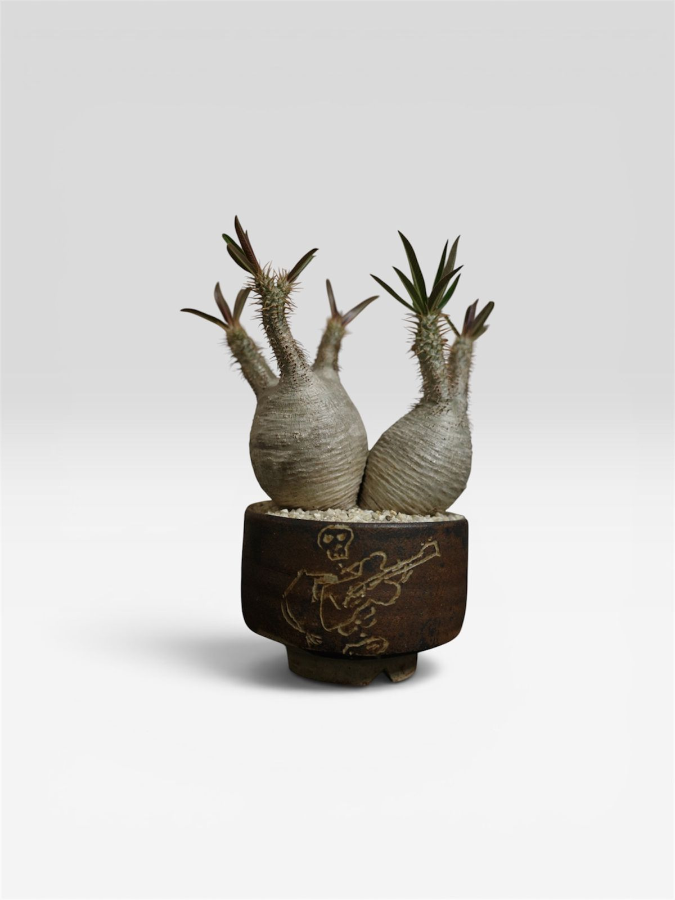
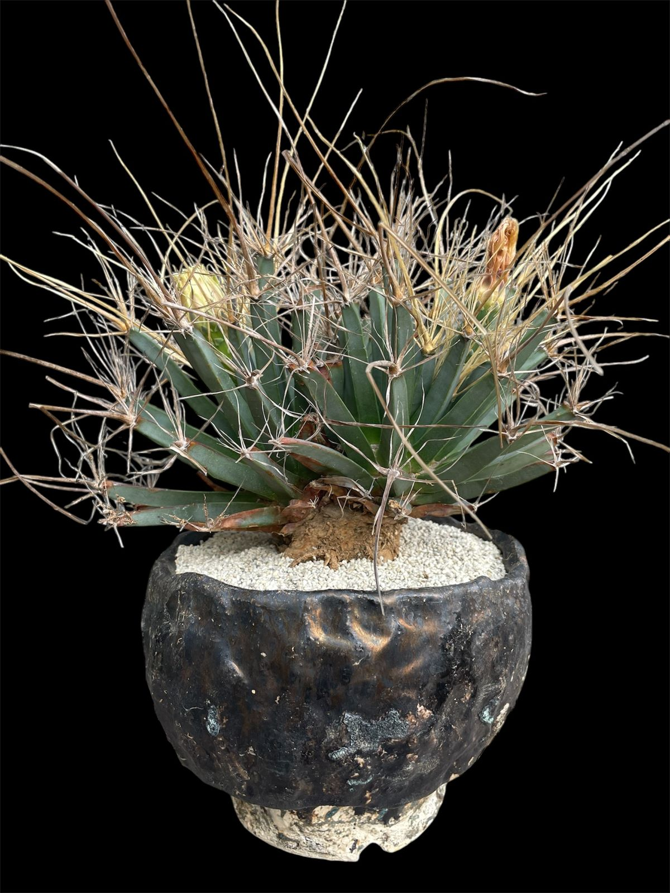
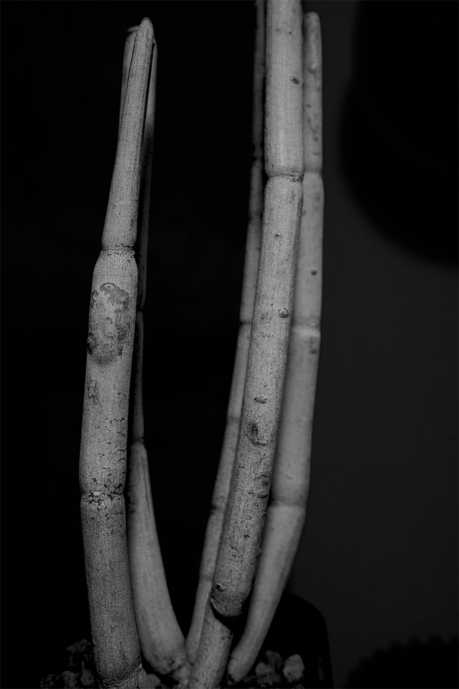
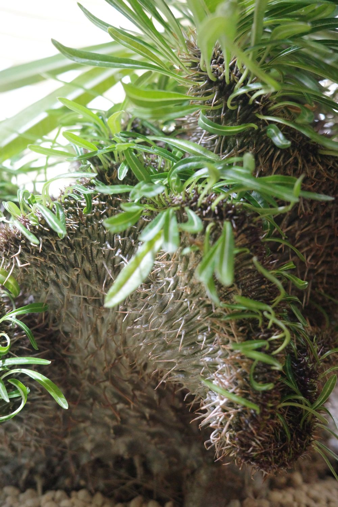
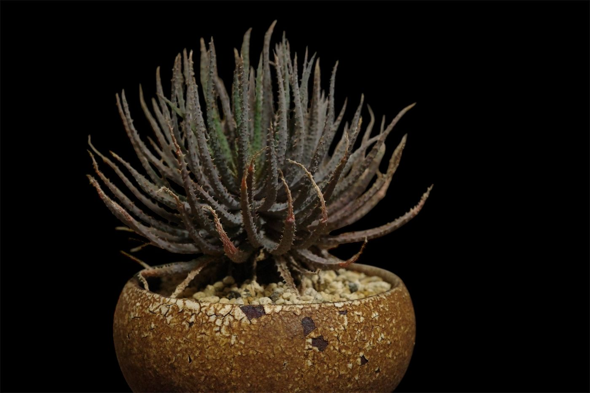
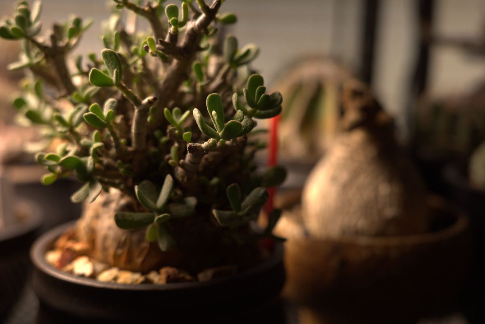

膨らんだ幹や、棘をまとった姿に惹かれたら、それが始めどきです。塊根植物・多肉植物・サボテンの育て方と、黒い鉢や古道具と合わせて部屋に置く楽しみを、はじめての人にも分かるように綴っています。
@smile_maker__zzz で毎週の成長記録を更新中
土から、かたちを。

はじめての一株
塊根植物は難しそうに見えますが、季節に合わせて水やりを変えることさえ覚えれば、何年も付き合える植物です。始めるまでの流れをまとめました。
一株を選ぶ
最初は夏型のパキポディウムや、丈夫なサボテンがおすすめです。春から初夏に迎えると、すぐ育つ季節に入るので失敗しにくくなります。
鉢と土を用意する
株よりひと回り大きく、底に穴のある鉢を選びます。土は市販の多肉植物・サボテン用で十分です。
明るい窓辺に置く
日当たりと風通しが何より大事です。南向きの窓辺か、春から秋はベランダが定位置になります。
季節で水を変える
育つ季節は乾いたらたっぷり、休む季節は控えめに。下の生育カレンダーを目安にしてください。
迷ったら、InstagramのDMで気軽に聞いてください。始めたばかりの人の質問も歓迎しています。
Instagramで質問するコレクション
手元で育てている株を、原産地と生育型、植えている鉢とあわせて記録しています。
-
黒竜
Pterocactus tuberosus- 分類
- サボテン・サボテン科
- 原産地
- アルゼンチン
- 生育型
- 夏型
- 鉢
- 黒い鉢
-

アデニア・アクレアータ
Adenia aculeata- 分類
- 塊根植物・トケイソウ科
- 原産地
- 東アフリカ
- 生育型
- 夏型
- 鉢
- 黒土の丸鉢、歯車の台
-

パキポディウム・グラキリス
Pachypodium rosulatum var. gracilius- 分類
- 塊根植物・キョウチクトウ科
- 原産地
- マダガスカル
- 生育型
- 夏型
- 鉢
- 骸骨のギター弾きを彫った焼締め鉢
-

晃山
Leuchtenbergia principis- 分類
- サボテン・サボテン科
- 原産地
- メキシコ
- 生育型
- 夏型
- 鉢
- 黒釉の手びねり鉢
-

セロペギア・フスカ
Ceropegia fusca- 分類
- 多肉植物・キョウチクトウ科
- 原産地
- カナリア諸島
- 生育型
- 冬型
- 鉢
- 黒い鉢
-
パキポディウム・ウィンゾリー
Pachypodium windsorii- 分類
- 塊根植物・キョウチクトウ科
- 原産地
- マダガスカル
- 生育型
- 夏型
- 鉢
- 炭化させたような棘の鉢
生育カレンダー
水やりの量は、その株が「いま育つ季節か、休む季節か」で決まります。生育型ごとの目安です。枠で囲んだ列が今月です。
| 生育型 | 1月 | 2月 | 3月 | 4月 | 5月 | 6月 | 7月 | 8月 | 9月 | 10月 | 11月 | 12月 |
|---|---|---|---|---|---|---|---|---|---|---|---|---|
| 夏型パキポディウム・サボテンなど | 休眠期 | 休眠期 | 緩やか | 生育期 | 生育期 | 生育期 | 生育期 | 生育期 | 生育期 | 生育期 | 緩やか | 休眠期 |
| 冬型亀甲竜・オトンナなど | 生育期 | 生育期 | 生育期 | 緩やか | 休眠期 | 休眠期 | 休眠期 | 休眠期 | 緩やか | 生育期 | 生育期 | 生育期 |
| 春秋型エケベリア・ハオルチアなど | 休眠期 | 緩やか | 生育期 | 生育期 | 生育期 | 緩やか | 休眠期 | 休眠期 | 生育期 | 生育期 | 生育期 | 緩やか |

関東の室内と屋外を行き来する管理での目安です。
夏型の株は、最低気温が10℃を下回る頃から水を減らし、葉が黄色くなって落ち始めたら断水に切り替えます。春、新芽が動いてから少しずつ水を戻します。
読みもの
育て方の試行錯誤、鉢や用土のこと、植物のある部屋づくり。


鉢と部屋
植物のかたちがいちばん映えるのは、手を加えすぎていない素材の横だと思っています。
削り跡の残る木、焼締めの土、錆びた鉄、ざらついた壁。原始的な質感の道具と並べると、塊根の肌や棘の影がよく見えてきます。
- 黒い鉢
- 焼締めや炭化させたような黒い鉢は、塊根の白っぽい肌と緑の葉をいちばん引き立てます。歪みや凹みのある手びねりを選んでいます。
- 歯車と古材
- 鉢の下には古い鋳物の歯車や古材を敷いています。床から少し浮かせるだけで、株の輪郭が壁の前に立ち上がります。
- 土壁と光
- 白い壁より少し暗い土色の壁のほうが、昼の斜めの光で棘の影がくっきり出ます。窓から1m以内が定位置です。
- 化粧石
- 表土には黒の溶岩砂利か、赤玉土の硬質小粒。鉢の色と同系にすると植物だけが浮かびます。